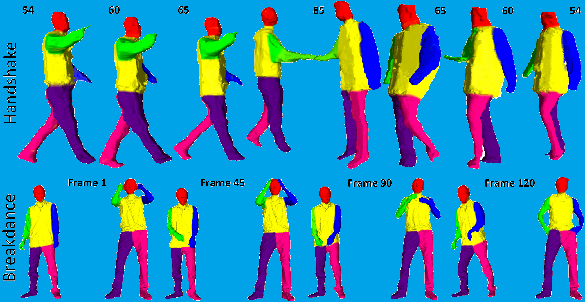

Semantically Coherent Co-segmentation and Reconstruction of Dynamic Scenes
Armin Mustafa and Adrian Hilton Centre for Vision, Speech & Signal Processing University of Surrey, United Kingdom to appear atIEEE Conference on Computer Vision and Pattern Recognition (CVPR) 2017
Abstract
In this paper we propose a framework for spatially and temporally coherent semantic co-segmentation and reconstruction of complex dynamic scenes from multiple static or moving cameras. Semantic co-segmentation exploits the coherence in semantic class labels both spatially, between views at a single time instant, and temporally, between widely spaced time instants of dynamic objects with similar shape and appearance. We demonstrate that semantic coherence results in improved segmentation and reconstruction for complex scenes. A joint formulation is proposed for semantically coherent object-based co-segmentation and reconstruction of scenes by enforcing consistent semantic labelling between views and over time. Semantic tracklets are introduced to enforce temporal coherence in semantic labelling and reconstruction between widely spaced instances of dynamic objects. Tracklets of dynamic objects enable unsupervised learning of appearance and shape priors that are exploited in joint segmentation and reconstruction. Evaluation on challenging indoor and outdoor sequences with hand-held moving cameras shows improved accuracy in segmentation, temporally coherent semantic labelling and 3D reconstruction of dynamic scenes.
Paper
 Semantically Coherent Co-segmentation and Reconstruction of Dynamic Scenes
Armin Mustafa and Adrian Hilton
CVPR 2017


Data
Data used in this work can be found in the CVSSP 3D Data Repository.Citation
@INPROCEEDINGS{MustafaCVPR17,
title = {Semantically Coherent Co-segmentation and Reconstruction of Dynamic Scenes},
year={2017},
booktitle={CVPR},
author={Mustafa, A. and and Hilton, A.}
}